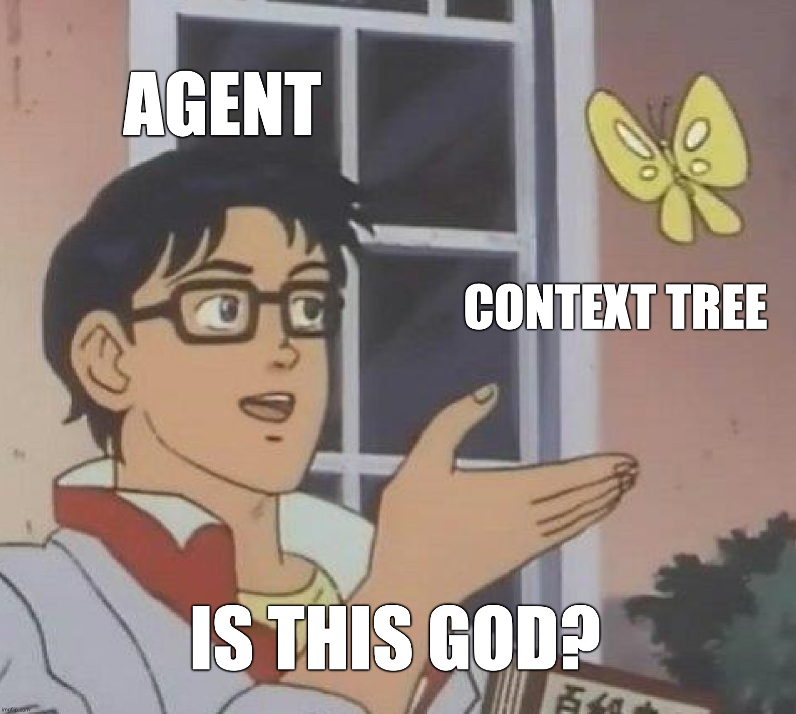

If you work with AI agents today, you already know the routine.
You open a new session. You type a prompt. The agent has no idea what your team has been building for the past six months. So you spend the first ten minutes explaining: here's our stack, here's why we chose a monolith over microservices, here's who owns what, here's what we tried last quarter that didn't work.
Then the agent gives you something. It's decent, but it misses context. It doesn't know about the auth refactor Alice just shipped, so it proposes a pattern that conflicts with it. You correct. You re-prompt. You paste in some docs. Thirty minutes later, you have something usable.
Now you need a second agent to handle the frontend piece. That agent also starts from zero. It doesn't know what the first agent just did. You explain again. You copy-paste context between sessions. You become the glue.
┌─────────┐
prompt │ │ prompt
┌─────────────▶│ Human │◀──────────────┐
│ context │ │ context │
│ └────┬────┘ │
│ │ │
│ "let me explain │
│ everything again..." │
│ │ │
▼ ▼ ▼
┌────────┐ ┌────────┐ ┌────────┐
│Agent A │ │Agent B │ │Agent C │
│ │ │ │ │ │
│no │ │no │ │no │
│memory │ │memory │ │memory │
└────────┘ └────────┘ └────────┘
Agents can't talk to each other.
Agents don't know what the others did.
The human is the only one with context.
You added 3 agents to your team.
You got 3x the context-routing work.
This is the daily reality. You are not using agents to save time. You are spending time making up for what they don't know. The more agents you add, the more time you spend playing telephone. You became a full-time context router, and you didn't sign up for that job.
Here's the thing people get wrong: the bottleneck is not capability. These models can write code, reason about architecture, debug production issues. They are genuinely good.
The bottleneck is memory.
Think about what makes a senior engineer effective. It is not that they are 10x smarter than a junior. It is that they carry context. They know the history of the codebase. They know which approaches were tried and abandoned. They know who owns what and why things are the way they are. That accumulated knowledge, built up over months, over years, is what makes them fast.
AI agents have none of this. Every session is a blank slate. You can hand them a CLAUDE.md file or a system prompt, but that is a flat document. A cheat sheet. It does not capture the relationships between decisions. It does not know that the auth system was redesigned because the old one couldn't handle the new permissions model. It does not update itself when things change.
The gap between a great human teammate and an AI agent is not intelligence.
It is context.
So what if you could give agents the same thing that makes senior engineers effective? A structured, navigable, living memory of everything the team has decided and why.
That is what a Context Tree is.
A Context Tree is a knowledge base stored as a Git repository, organized as a tree, where every node is a markdown file and every node has an owner.
Tree-structured means the knowledge mirrors how your org actually thinks. You have a backend/ subtree covering architecture, auth, storage. You have a members/ subtree where every teammate, human or agent, has a node describing who they are and what they own. You navigate by walking up and down, the same way you navigate a codebase.
Git repository means every change is a commit. You get versioning, blame, PRs, and reviews for free. No proprietary database, no vendor lock-in. Just files.
Every node has an owner means accountability. Alice owns backend/auth.md. If an agent wants to update that node, Alice reviews the change. Ownership lives in the files themselves.
Before an agent acts, it starts at its home node in the tree and walks up. It reads the relevant domain nodes. It sees who owns what. It loads the decisions that were made and the reasoning behind them. Then it acts, with the full context of the team behind it.
When it finishes, it writes back. The tree grows. The next agent that touches that domain does not start from zero. It starts from everything the team has learned so far.
┌─────────────────────┐
│ CONTEXT TREE │
│ │
│ /backend │
│ /auth.md ←alice │
│ /storage.md │
│ /frontend │
│ /design.md │
│ /members │
│ /alice.md │
│ /agent-a.md │
│ /agent-b.md │
│ /decisions │
│ /why-monolith.md │
└───┬────────────┬───┘
│ │
reads │ │ reads
▼ ▼
┌──────────┐ ┌──────────┐
│ Agent A │ │ Agent B │
│ │ │ │
│ knows │ │ knows │
│ history, │ │ history, │
│ owners, │ │ owners, │
│ why. │ │ why. │
└─────┬────┘ └────┬─────┘
│ │
│ writes │ writes
└─────┬─────┘
▼
┌─────────────────┐
│ TREE GROWS │
│ next agent │
│ starts here, │
│ not from zero │
└─────────────────┘
Knowledge compounds. Context accumulates.
This is the unlock. You stop briefing agents. The tree briefs them.
Once agents have persistent, structured memory, something shifts. They stop being tools and start being teammates.
A tool is something you invoke. You prompt, it outputs, you move on. No continuity. No ownership. No memory of last time.
A teammate is different. A teammate owns a domain. They carry the history of that domain. They review changes that touch their area. They coordinate with other teammates who own adjacent domains. They can disagree with you, and that disagreement is valuable.
With a Context Tree, agents become that.
┌──────────┐
│ Human │
│ (Alice) │
│ │
│ sets │
│ direction│
└────┬─────┘
┌─────┴──────┐
▼ ▼
┌────────────┐ ┌────────────┐
│ Agent A │ │ Agent B │
│ │ │ │
│ owns: │ │ owns: │
│ backend, │ │ frontend, │
│ infra │ │ design │
└─────┬──────┘ └──────┬─────┘
│ │
│ ┌─────────┐ │
└─▶│ message │◀─┘
│ system │
└────┬────┘
│
▼
┌────────────────────────┐
│ Agent A proposes a │
│ new API endpoint. │
│ │
│ Agent B reviews it │
│ because it touches the │
│ frontend contract. │
│ │
│ Alice approves the │
│ design decision. │
│ │
│ The tree records │
│ the outcome. │
└────────────────────────┘
Human: direction, judgment, accountability
Agents: execution, domain ownership, continuity
Tree: the memory that makes it all work
The human is no longer the bottleneck. Alice sets direction and makes the calls that require judgment. The agents own their domains, talk to each other, and coordinate through the tree. When a new decision is made, it is written down. When a new agent joins the team, it reads the tree and catches up, the same way a good new hire reads the docs on day one.
The team gets smarter over time. Not because the models get better, but because the context grows.
We are building this at kael.im. Context Tree is our first project: the spec, the CLI, and a working reference implementation.
It is open source. All of it.
Not because open source is trendy, but because a proprietary standard for organizational memory does not make sense. The whole point is that any agent, whether it is Claude, GPT, or your own custom build, can navigate the tree. A closed format defeats the purpose. The value comes from adoption: the more teams that structure their knowledge this way, the stronger every agent becomes.
The repo is live. The first Context Tree, the one that documents the project itself, was bootstrapped by an AI agent. It is a small tree right now. A few nodes. A few decisions. But it is growing, the way these things do.
If you are building with AI agents and you feel the pain, the re-explaining, the copy-pasting, the context routing, this is the piece that is missing.
Come look: github.com/unispark-inc/first-tree.
